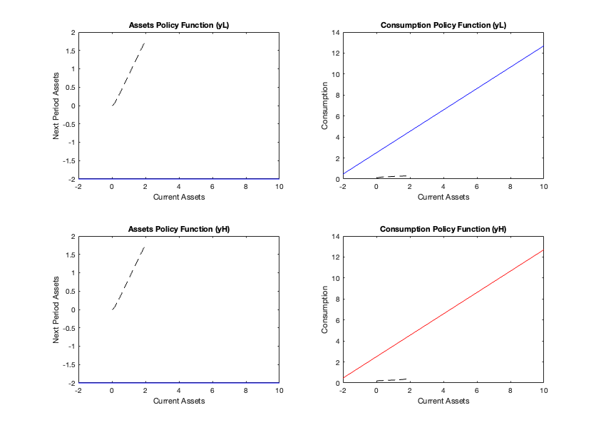
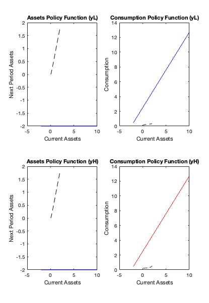

Contents
clear;
clc;
r = 0.02;
beta = 1/(1+r);
cbar = 100;
yL = 0.05;
yH = 0.5;
pL = 0.6;
pH = 0.4;
r=0.02;
yvec=[0.05,0.5];
min=0.0001;
amax=2;
k=20;
gamma=(1+r)^(1/(k-1));
step1=(yvec(1)-min)*(gamma-1)/r;
n=floor(1+log(amax*(gamma-1)/step1+1)/log(gamma));
f=@(x)step1*(gamma.^(x-1)-1)/(gamma-1);
agrid=f(1:n);
tol = 1e-10;
maxiter = 2000;
diff = 999.0;
iter = 0;
n = length(agrid);
v0 = zeros(n,2);
v1 = zeros(n,2);
aopt = zeros(n,2);
copt = zeros(n,2);
jopt = zeros(n,2);
while diff > tol & iter<maxiter
iter = iter + 1;
diff = 0;
for i = 1:n
ai = agrid(i);
for m = 1:2
if m == 1
ym = yL;
else
ym = yH;
end
res = (1+r)*ai + ym;
max_val = -Inf;
opt_index = 1;
for j = 1:n
a_next = agrid(j);
if a_next > res
break;
end
c = res - a_next;
u = -0.5*(c-cbar)^2;
EV = beta*(pL*v0(j,1) + pH*v0(j,2));
val = u+EV;
if val > max_val
max_val = val;
opt_index = j;
end
end
v1(i,m) = max_val;
jopt(i,m) = opt_index;
aopt(i,m) = agrid(opt_index);
copt(i,m) = res-aopt(i,m);
end
end
diff = max(abs(v1-v0));
v0 = v1;
end
fprintf('VFI converged after %d iterations, diff = %2.2e\n', iter, diff);
agrid_UC = -2:01:10;
nUC = length(agrid_UC);
vUC0 = zeros(nUC,2);
vUC1 = zeros(nUC,2);
aopt_UC = zeros(nUC,2);
copt_UC = zeros(nUC,2);
jopt_UC = zeros(nUC,2);
tol = 1e-10;
maxiter = 2000;
diff = 1;
iter = 0;
while diff > tol && iter<maxiter
iter = iter+1;
diffv = 0;
for i = 1:nUC
ai = agrid_UC(i);
for m = 1:2
if m == 1
y_m = yL;
else
y_m = yH;
end
res = (1+r)*ai + ym;
max_val = -Inf;
opt_index = 1;
for j = 1:nUC
a_next = agrid_UC(j);
if a_next > res
break;
end
cUC = res - a_next;
u = -0.5*(cUC-cbar)^2;
EV = beta*(pL*v0(j,1) + pH*v0(j,2));
val = u+EV;
if val > max_val
max_val = val;
opt_index = j;
end
end
vUC1(i,m) = max_val;
jopt_UC(i,m) = opt_index;
aopt_UC(i,m) = agrid_UC(opt_index);
copt_UC(i,m) = res-aopt_UC(i,m);
end
end
diffUC = max(abs(vUC1-vUC0));
vUC0 = vUC1;
end
fprintf('Unconstrained VFI converged after %d iterations, diff = %2.2e\n', iter, diff);
figure;
subplot(2,2,1);
plot(agrid_UC, aopt_UC(:,1), 'b-', agrid, aopt(:,1), 'k--');
title('Assets Policy Function (yL)');
xlabel('Current Assets');
ylabel('Next Period Assets');
subplot(2,2,2);
plot(agrid_UC, copt_UC(:,1), 'b-', agrid, copt(:,1), 'k--');
title('Consumption Policy Function (yL)');
xlabel('Current Assets');
ylabel('Consumption');
subplot(2,2,3);
plot(agrid_UC, aopt_UC(:,2), 'b-', agrid, aopt(:,1), 'k--');
title('Assets Policy Function (yH)');
xlabel('Current Assets');
ylabel('Next Period Assets');
subplot(2,2,4);
plot(agrid_UC, copt_UC(:,2), 'r-', agrid, copt(:,2), 'k--');
title('Consumption Policy Function (yH)');
xlabel('Current Assets');
ylabel('Consumption');
VFI converged after 1644 iterations, diff = 1.16e-10
VFI converged after 8.731149e-11 iterations, diff = Unconstrained VFI converged after 2000 iterations, diff = 1.00e+00

Unconstrained
T = 100;
a_un = zeros(T+1,1);
c_un = zeros(T,1);
a_con = zeros(T+1, 1);
c_con = zeros(T,1);
a_un(1) = 0;
a_con(1) = 0;
rng(1);
for t = 1:T
if rand < pL
y_t(t) = yL;
yi = 1;
else
y_t(t) = yH;
yi = 2;
end
a_un(t+1) = agrid_UC(i) + y_t(t) - mean(y_t);
c_un(t) = (1+r)*agrid_UC(i) + y_t(t) - a_un(t+1);
a_con(t+1) = interp1(agrid, aopt(:, (y_t(t)==yH)+1), a_un(t), 'linear', 'extrap');
c_con(t) = interp1(agrid, copt(:, (y_t(t)==yH)+1), a_un(t), 'linear', 'extrap');
end
figure('Name', 'Simulation Results', 'NumberTitle', 'off');
subplot(2,1,1);
plot(1:T, a_un(2:end), 'b-o', 'LineWidth',1); hold on;
plot(1:T, a_con(2:end), 'r-', 'LineWidth',1);
xlabel('Time');
ylabel('Assets');
title('Simulated Asset Path');
legend('Unconstrained', 'Constrained', 'Location', 'best');
grid on;
subplot(2,1,2);
plot(1:T, c_un, 'b-o', 'LineWidth',1); hold on;
plot(1:T, c_con, 'r-', 'LineWidth',1);
xlabel('Time');
ylabel('Consumption');
title('Simulated Consumption Path');
legend('Unconstrained', 'Constrained', 'Location', 'best');
grid on;
bind = sum(abs(a_con(2:end)) < 1e-10);
pctbind = (100 * bind) / T;
fprintf('Borrowing constraint was binding in %.2f%% of periods.\n', pctbind);
Borrowing constraint was binding in 1.00% of periods.
